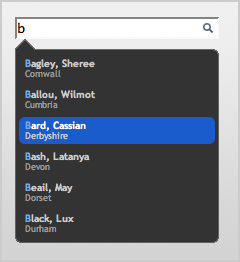
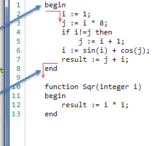
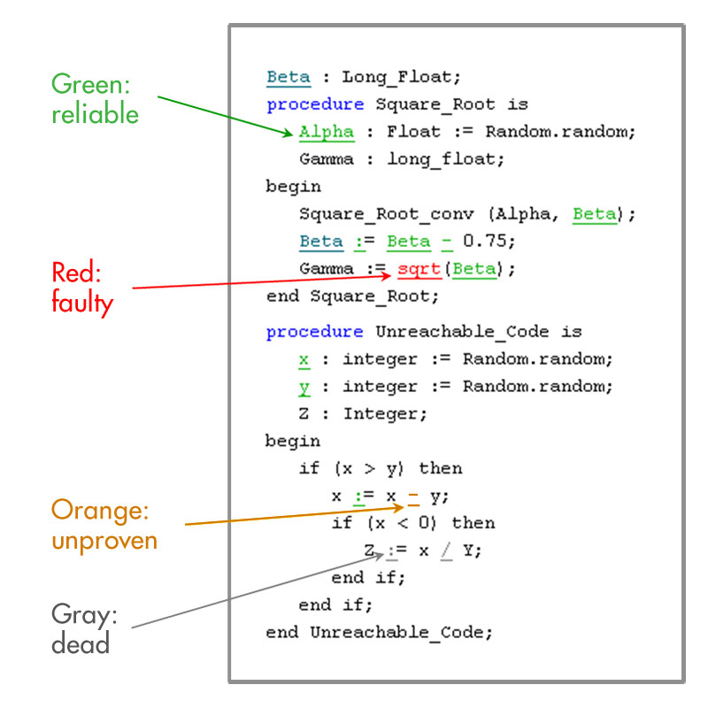

Autocomplete

Dit wordt in veel tekst-editors en IDE’s al toegepast omdat dit een groot voordeel is bij het typen. Dit is dan ook een functie die naar ons idee niet kan missen bij Amanda.
Auto-Indent.

Omdat Amanda erg strict is met whitespace zou automatisch indenten een erg goed idee zijn. Misschien zou het een idee zijn om dit in real-time te doen, maar daar moeten we dan eerst nog wat meer onderzoek naar doen.
Color Coding

Er zit al een soort van color-coding in de huidige Amanda (de windows versie), alleen hebben we de source hiervoor niet beschikbaar. Ook wordt lang niet alles ge-colored. Met de nieuwe versie willen we ervoor zorgen dat er meer gebruik wordt gemaakt van color-coding
Vernieuwde Interface

De vernieuwde interface zal alle functies bevatten die van een moderne windows applicatie verwacht worden. Functies zoals Snap-To-Grid en meerdere programmeer Views(layouts). Verder zal de vernieuwde layout er veel beter uitzien.